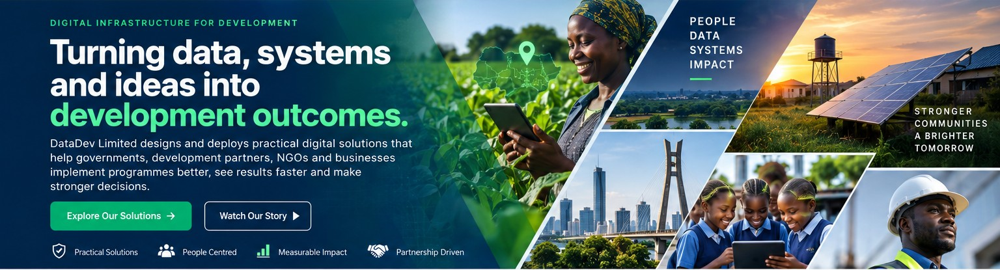
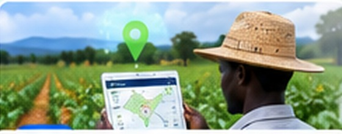

Digital Registries & Verification
Structured records for beneficiaries, farmers, workers, facilities and assets—with identity, verification and lifecycle tracking.

DataDev Limited designs and deploys practical digital solutions that help governments, development partners, NGOs and businesses implement programmes better, improve visibility and make stronger decisions.
DataDev combines programme understanding, data architecture, software engineering and implementation support to create systems that remain useful beyond the demonstration stage.
Structured records for beneficiaries, farmers, workers, facilities and assets—with identity, verification and lifecycle tracking.
Geotagging, maps, enumerator workflows, low-connectivity processes and field-level operational visibility.
Indicators, dashboards, evidence workflows, implementation monitoring and decision-support views.
Digital processes for assignments, approvals, matching, bookings, compliance and service delivery.
Operational analytics and management views that turn fragmented records into actionable information.
Modular architecture and APIs designed to complement existing institutional systems instead of replacing them unnecessarily.
Our platform portfolio demonstrates how the same core strengths—identity, data, workflow, analytics and operational visibility—can be adapted across sectors.

Farmer registry and digital identity, GIS/geotagging, QR verification, field-team workflows, service-delivery tracking, M&E dashboards and API-ready integration.
Explore AGROW →Worker and customer onboarding, identity and guarantor verification, availability/GPS matching, job lifecycle, ratings, payments, wallet/earnings and company workspace.
Explore HelpNova →
Bookings and guest profiles, service requests, recurring operations workflows, facility coordination and operational reporting.
Explore GuestNova →Facility and personnel registry, role-based access, licence-status monitoring, expiry alerts, search/export dashboards and public licence verification.
Explore ComplianceWatch →AGROW is designed to connect farmer registration, geospatial intelligence, verification, service delivery and monitoring around existing institutional structures. This makes it relevant to value-chain programmes that need trusted field data without unnecessary system replacement.
Illustrative interface representation — replace with live AGROW screenshots before final client launch.
DataDev is structured as a cross-sector technology and implementation company—not a single-product business.
Farmer services, value chains, field operations and programme intelligence.
Beneficiary management, MEL, implementation visibility and partner reporting.
Registries, verification, compliance and accountability systems.
Site data, field intelligence, deployment visibility and asset monitoring.
Identity, trust, matching and service-delivery workflows.
Bookings, operations, workflow automation and management reporting.
Start a conversation about a programme, platform, data system or field implementation challenge.